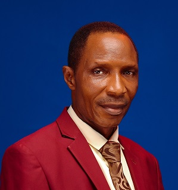
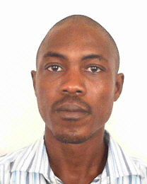

My journey into environmental science did not begin in a laboratory - it began with curiosity. I grew up in Osun State, Nigeria, surrounded by changing seasons, intense rainfall, dry harmattan winds, and the everyday realities of how weather affects people’s lives. As someone born in the early 2000s, I often found myself wondering why floods happen, why heat feels different some years, and how nature responds to human activity. Those questions stayed with me.
That curiosity eventually led me to the Federal University of Technology, Akure (FUTA), where I studied Meteorology. University opened a new world for me; the physics of the atmosphere, climate systems, environmental processes, and the realization that behind every environmental challenge lies data waiting to be understood.
Along the way, I discovered something important: understanding the environment requires more than scientific theory, it requires data, analysis, and the ability to interpret complex patterns. That discovery naturally pushed me into data science. I began learning computational tools, statistical analysis, and programming, not just as technical skills, but as instruments to answer environmental questions more deeply.
Today, I stand at the intersection of environmental science, climate research, and data analytics. I have conducted fieldwork, analyzed environmental datasets, explored climate variability patterns, and worked on projects that connect science with real-world impact. Each experience has strengthened my belief that research is not just about knowledge; it is about solving problems that affect communities and ecosystems.
Beyond academics and technical skills, I see myself as someone driven by purpose. I am motivated by discovery, by the process of learning, and by the possibility that scientific insight can improve lives. Whether teaching students, analyzing climate data, or participating in environmental projects, I am always searching for ways to grow and contribute meaningfully.
My long-term vision is to become a researcher and scientist whose work supports climate resilience, environmental sustainability, and informed decision-making, especially in regions that are most vulnerable to environmental change.
Mr. Babalola was a dedicated Environmental Data Analyst in our company, working on diverse environmental and energy projects and representing the organization in data-driven initiatives. His ability to analyze data and propose innovative solutions greatly benefited Cryostar Technologies. His growth mindset, professionalism, and passion made him an invaluable member of our team. I confidently recommend him for any role requiring productivity, analytical strength, and innovation.

Olumide is not just my son, but a hardworking and innovative young man who transformed my palm oil farm through dedication and practical thinking. By applying remote monitoring systems and data-driven practices, he significantly improved yield and operational efficiency. I am proud of his vision, discipline, and strong commitment to progress.

Mr. Babalola Elijah Olumide is a highly dedicated and intellectually strong graduate of Meteorology and Climate Science. His ability to apply geospatial and climate data analysis to real-world environmental challenges, combined with his research experience in ocean-atmosphere interactions and flood analysis, distinguishes him as an exceptional candidate. His curiosity, discipline, and analytical mindset make him well suited for advanced academic and professional environments.
Mr. Babalola Elijah has been a dedicated and impactful IT Instructor under my supervision. He demonstrated strong communication skills, analytical thinking, and the ability to simplify complex technical concepts for diverse learners. His initiative in mentoring student projects and applying technology to real-world problems reflects his interdisciplinary mindset and continuous drive for growth.